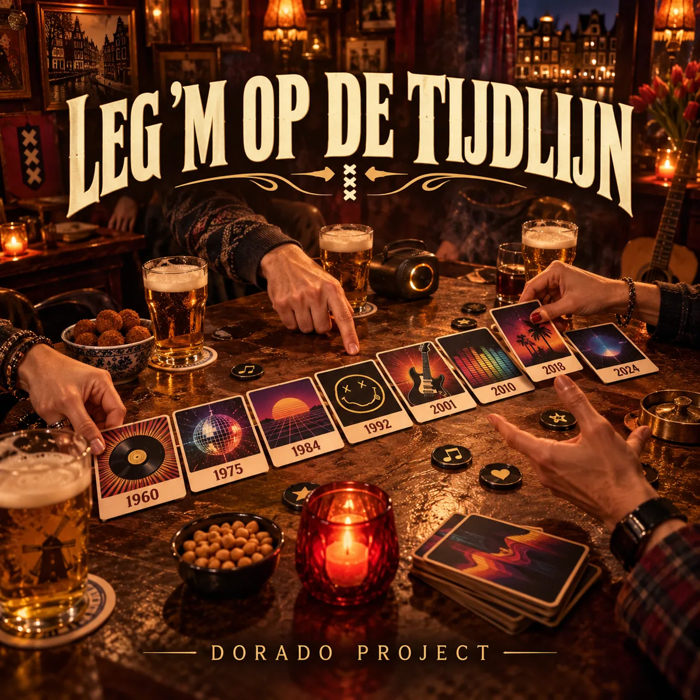

SINGLE · LEVENSLIED
Leg ’m op de tijdlijn
Levenslied / Kroegzang
Een warm en heerlijk dramatisch Amsterdams levenslied over Hitster, foute jaartallen, muzikale blunders en vrienden die het allemaal héél zeker weten. Ingezonden door Thijs.
Luister op Spotify →